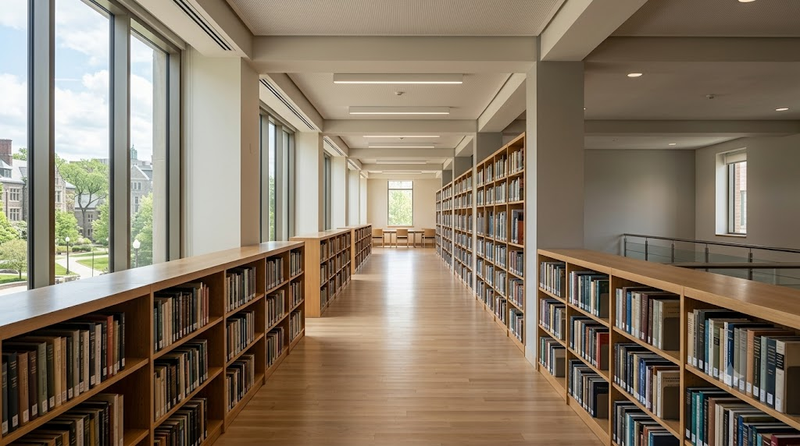

01 · O que é uma IES?
Entrar na universidade — sem saber, de fato, o que ela é
Quando entrei na UniCatólica para cursar Engenharia de Software, minha expectativa era bem direta: frequentar aulas, aprender a programar com profundidade e, no final, ter um diploma. A universidade era, no meu mapa mental, um lugar de passagem. Entro, pago meu preço em horas e esforço, saio habilitado. Simples assim.
O conteúdo desta unidade colocou em questão exatamente essa visão — e fez isso sem precisar desmontá-la de forma agressiva. Ele simplesmente mostrou o que uma Instituição de Ensino Superior também é, além do diploma: um ambiente de desenvolvimento intelectual e humano em sentido amplo, aberto a iniciativas que vão muito além do currículo obrigatório.
A distinção que ficou
Uma IES não é um lugar de passagem — é um lugar de construção. A diferença não está no tempo gasto lá dentro, mas na disposição de enxergar o que está disponível além da grade: parcerias, projetos, pesquisa, extensão, relações que duram além da formação.
O texto usa uma expressão que achei honesta: a universidade "acolhe projetos pessoais vinculados ao conhecimento". Isso é diferente de dizer que ela os exige. A abertura existe — cabe a quem está lá decidir se aproveita ou ignora. Minha visão utilitária não estava errada. Mas era incompleta. O diploma continua sendo uma meta concreta, mas não pode ser a única lente.

02 · Ensino, Pesquisa e Extensão
Os três pilares que ninguém explicou quando eu entrei
Ensino, pesquisa e extensão são os três pilares de qualquer IES. O material chama essa combinação de indissociável — não é possível ter uma universidade de verdade com apenas um ou dois deles. Cada pilar afeta os outros de formas que não são sempre óbvias de início.
Ensino
Conserva e transmite o conhecimento acumulado pela tradição. É o pilar mais visível: aulas, avaliações, conteúdo. Mas também é onde a atitude crítica começa — o estudante pode ir além de receber passivamente e começar a questionar e formular.
Pesquisa
Cria conhecimento novo. Na pesquisa, a assimetria entre professor e estudante diminui — ambos se tornam pesquisadores. Para o estudante, é uma primeira janela sobre como o conhecimento de sua área é efetivamente produzido, não apenas consumido.
Extensão
Leva o conhecimento para fora da universidade e traz a comunidade para dentro. É o pilar com maior potencial de transformação direta — e o menos percebido por quem está nos primeiros períodos. Oficinas, projetos comunitários, eventos abertos: tudo isso é extensão.
Indissociabilidade
Os três não existem em compartimentos separados. A pesquisa informa o ensino, a extensão alimenta a pesquisa com problemas reais, o ensino forma quem vai fazer extensão e pesquisa. Entender os três juntos muda a forma de enxergar qualquer disciplina isolada.
No contexto de Engenharia de Software, essa indissociabilidade fica especialmente visível. O ensino cobre os fundamentos teóricos e práticos — algoritmos, estruturas de dados, arquitetura de sistemas. A pesquisa aparece em projetos integradores e iniciações científicas, problemas abertos sem solução pré-definida. E a extensão pode se manifestar em aplicações desenvolvidas para comunidades locais, hackathons com impacto real, ou projetos que resolvem problemas concretos de Palmas e região.
"Tomados em conjunto, [ensino, pesquisa e extensão] dão corpo a um tipo de instituição diferente de todas as outras — um lugar em que algumas potencialidades do espírito humano podem ser cultivadas até atingir seu mais alto nível."Material da disciplina · Unidade III
03 · Perspectivas da Vida Acadêmica
Planejar o percurso — ou ser levado por ele
O texto parte de uma distinção simples mas incisiva: há estudantes que cumprem o currículo, e há estudantes que percebem a universidade como um ambiente de possibilidades a serem exploradas com iniciativa. Os dois obtêm diplomas — mas o que carregam ao sair é muito diferente.
O argumento não é moralizante. Não se trata de "trabalhe mais" ou "seja mais dedicado". O ponto é mais específico: quem consegue perceber o sentido daquilo que faz — e escolhe se envolver com o que tem significado — tende a extrair experiências que não aparecem em nenhuma grade curricular. Parcerias com professores, grupos de pesquisa, projetos que nascem de interesses genuínos.
Postura
- Estudante passivo
- Estudante protagonista
O que caracteriza
- Cumpre o mínimo exigido. Frequenta aulas, entrega trabalhos. A universidade é uma obrigação com prazo definido.
- Enxerga oportunidades além do currículo. Busca parcerias, engaja com pesquisa, traz questões próprias para o ambiente acadêmico.
No meu próprio percurso, sinto que estou em transição entre as duas posturas. Os projetos que desenvolvi até aqui — de disciplinas práticas a trabalhos em grupo de maior complexidade — me fizeram perceber que o envolvimento genuíno com um problema técnico produz um aprendizado de qualidade diferente da leitura passiva ou do exercício mecânico. Não é apenas "aprender mais rápido": é aprender de uma maneira que fica.
Reconheço que ainda subutilizo alguns recursos que a universidade oferece. Busco mais o conteúdo do que o contexto — as conversas com professores sobre trajetória, os projetos que existem fora da sala de aula, as conexões que só aparecem quando alguém decide procurá-las. O texto chama isso de "mentoria informal", e a falta dela é um custo que muitos estudantes pagam sem perceber.
04 · Função Social da IES
O que uma instituição deve à sua cidade
Este foi o tópico que mais me levou a pensar na UniCatólica especificamente — não em universidades em abstrato. O texto argumenta que uma IES não pode ser indiferente à comunidade em que existe: ela reflete interesses, anseios e expectativas da sociedade ao redor. Quando isso funciona, a instituição torna-se referência. Quando falha, torna-se mais uma organização burocrática com fins comerciais.
O caráter comunitário da UniCatólica
A UniCatólica pertence ao Grupo UBEC, que tem o caráter comunitário como traço constitutivo — não apenas como política, mas como razão de existir. Em Palmas, uma cidade fundada em 1989 que ainda está construindo suas referências institucionais, essa presença tem um peso diferente do que teria em uma capital com décadas de tradição universitária.
O que penso da UniCatólica enquanto instituição: ela tem qualidades reais e limitações reais, como qualquer outra. O que me parece genuíno é o compromisso com uma formação que vai além do técnico — disciplinas como esta, que colocam questões de valores, ética e projeto de vida no centro do currículo, revelam uma intenção formativa mais ampla. Isso não é trivial num curso de Engenharia de Software, onde a pressão pelo pragmatismo é constante.
Por outro lado, nenhuma instituição é o que seus documentos fundadores dizem que ela é — é o que as pessoas que dela participam fazem acontecer. O comprometimento comunitário depende de professores, estudantes e funcionários que levem essa responsabilidade a sério. Em alguns momentos, vejo isso acontecendo. Em outros, não. Essa honestidade não é crítica destrutiva — é a mesma exigência que o texto aplica à relação da universidade com o conhecimento: não aceitar a versão oficial sem perguntar se ela corresponde à prática.
"Uma IES desligada das relações com a comunidade perde seu sentido profundo e dificilmente a reconheceríamos como uma instituição socialmente relevante."Material da disciplina · Unidade III
A reflexão final que fica desta unidade é uma simples mudança de perspectiva: a universidade não é uma entidade separada de mim — ela é, em parte, o que eu escolho fazer dela. O comprometimento institucional com a comunidade depende de cada pessoa que está lá dentro. Isso não diminui a responsabilidade da instituição, mas distribui uma parte dela para cada estudante. E isso, admitidamente, é mais exigente do que apenas assistir às aulas.